One root, one promise, four questions
Every KiDraw graph starts as a single box. This one starts with the sentence at the top of the page and the four questions I get asked whenever I show the tool to somebody.
A keyboard-first graph editor
KiDraw draws graphs: boxes for ideas, arrows for how they relate. You build them without leaving the keyboard, and an on-screen keymenu lights only the keys that mean something right now.
This page is one of those graphs. Scroll, and it gets drawn.
Question one
The diagram on the right is the answer, drawn one branch at a time as you read.
Every KiDraw graph starts as a single box. This one starts with the sentence at the top of the page and the four questions I get asked whenever I show the tool to somebody.
It is a diagram editor. You drive it from the keyboard. The shortcuts are meant to be discovered rather than memorised. It is an experiment, and it is unfinished.
Everything past this point is detail hanging off one of those five.
A graph is just nodes — boxes, circles — and edges: lines, sometimes with arrowheads. That is the entire data model, and it is the same one underneath Miro, Visio, Draw.io, Excalidraw and Graphviz.
KiDraw belongs in that list. The difference is not what it draws; it is what your hands are doing while you draw. Those tools expect a mouse for creating, connecting and arranging, and most of them are very good at that.
The first bindings are borrowed from vi, because that is the keyboard language I already think in. h j k l move, and holding a key opens a second layer instead of a dialog.
That is a starting point, not a requirement. You should not have to be a programmer to use this, and other binding styles are on the list further down.
vi's real problem is that the manual lives in your head. KiDraw draws the manual on the screen instead: a keyboard that lights only the keys that mean something right now.
Whether that actually works is the experiment. The alpha is where you can judge it, and the next three screenshots are what it looks like.
A break from the diagram · the keymenu
KiDraw draws a keyboard along the bottom of the screen. At rest it lights only the commands that do something in the current mode. Hold one down and the same keyboard becomes that command's next choices, while the canvas previews where the result would land.
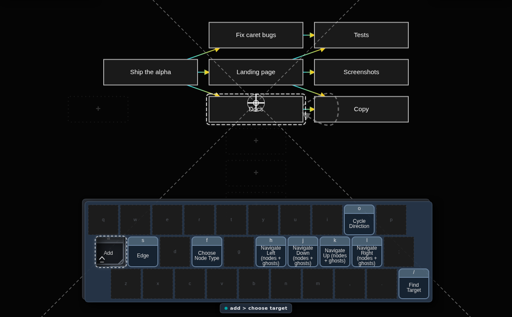
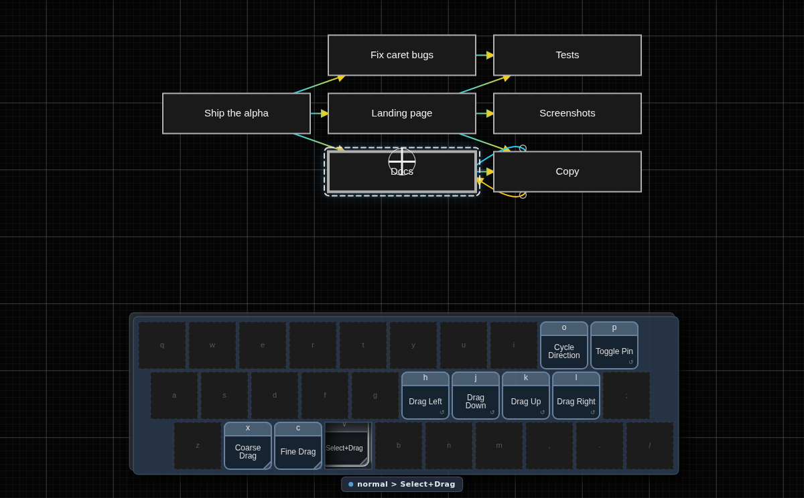
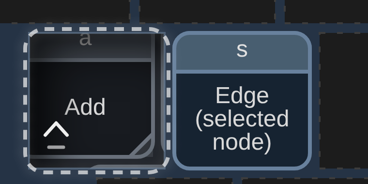
Question two
Three reasons, and one of them points back at a box you have already seen.
Because graphs are worth more than the effort they currently cost, because ideas leave faster than a mouse can catch them, and because keyboard tools are worth learning but hard to start.
Road maps, mind maps, the shape of an argument, the web itself. You have been reading and drawing graphs all along under other names.
An outline — including the one this page is built from — is a graph that has agreed to be a tree. Most of what I actually think about refuses.
The dashed arrow is the whole argument of the tool. “Avoid the mouse-keyboard switching bottleneck” is not a child of “Keyboard-first”, it points at it — a second parent, from another branch entirely.
Reaching for the mouse costs about a second, and a second is long enough to lose the thing you were about to write down. Do it forty times while sketching and the diagram ends up shaped by the interface instead of the idea.
Vi and Vim are worth the learning curve, but the curve is real and it is mostly about not knowing what is available. If a lit keyboard on screen can teach modal editing to somebody who would never install vim, that is a second thing worth having.
A break from the diagram · a real session
Three frames from the running app. Nodes arrive and the layout re-flows around them, so arranging is not a separate chore saved for the end.
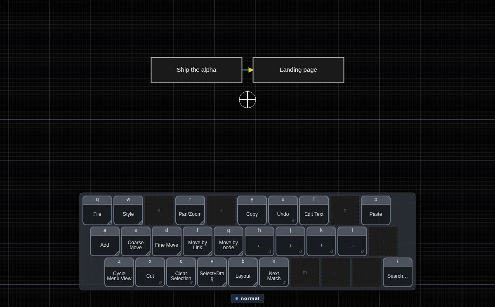
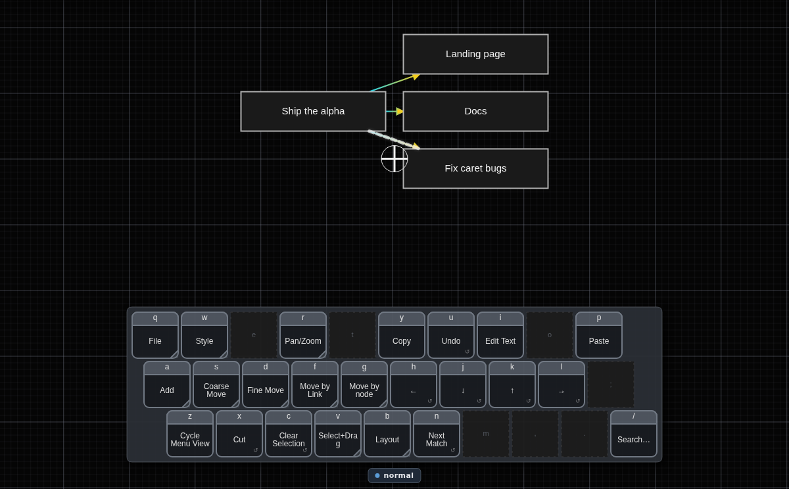
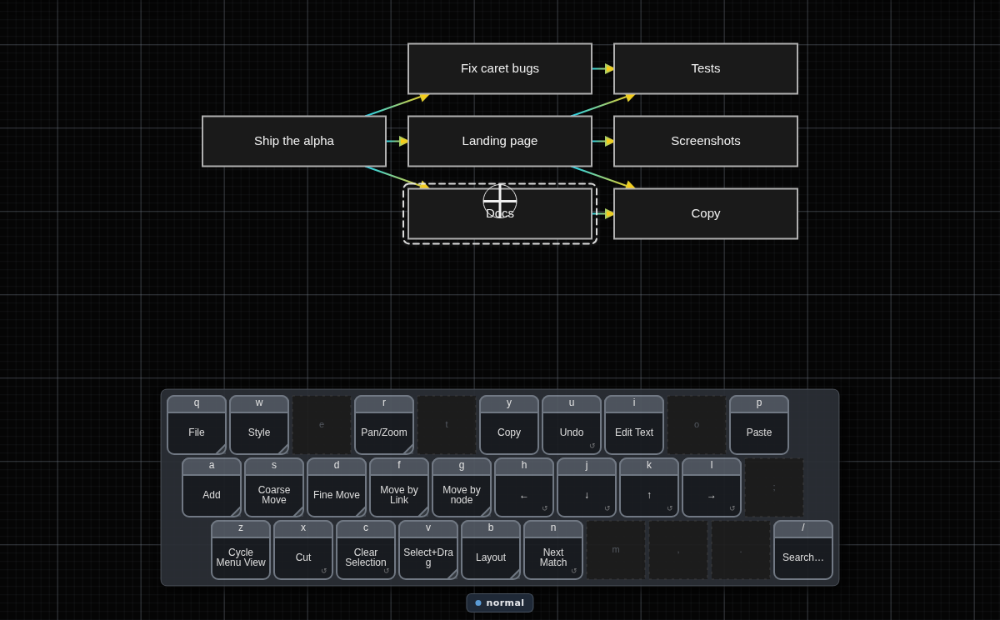
Same idea as the dashed arrow in the diagram above: real thinking has cross-links, and a tool that only does trees quietly asks you to throw them away.
Question three
Numbers on the arrows mean order. These five are the whole beginner's manual.
Almost everything KiDraw can do is optional. The part you need on day one fits in five steps, and the arrows leading to them are numbered because their order matters.
Move the crosshairs. Add a node. Type into it. Escape. Connect it to another one. That is the entire first session — everything else is convenience layered on top.
hjklA crosshair, not a pointer. h left, j down, k up, l right — the same four keys vi has used for fifty years, and the same four that will be re-bindable to arrows or wasd later.
Press and release a and a box appears under the crosshairs. Type its text the way you would in vi. ESC or Ctrl-[ takes you back out to normal mode.
Press and release matters: KiDraw treats a tap and a hold as two different commands, which is where most of its depth comes from without adding more keys.
Park the crosshairs on a node, press and hold a, then use h j k l to pick which of the neighbouring positions the new box lands in. The link is drawn as you choose.
That hold is the same gesture that lit up the keymenu in the screenshots above, which is not a coincidence — the menu exists so that holding a key is never a guess.
A break from the diagram · navigation
Zoomed out to 22%, the boxes are unreadable specks — but you still know where things are, because you built the shape. Land the crosshairs on one and it is drawn at readable size in place, without moving the rest of the graph.
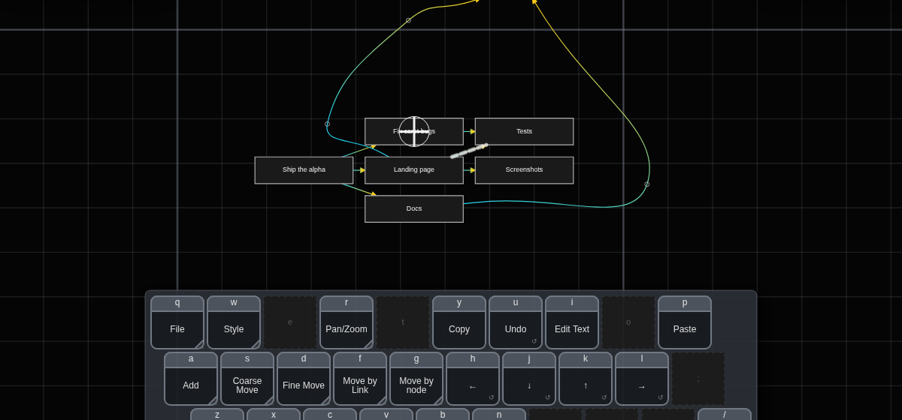
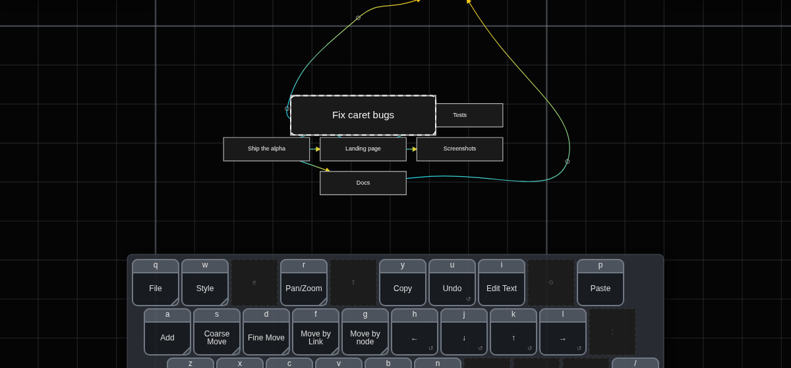
Hopping node to node and following a link are the two interactions I am least sure about; both are still being judged by feel, and neither is captured here yet because the capture would go stale in a week.
Question three, continued
Styling, routing, layout, and where your file actually goes.
The second child of “How does it work?” is the part I use constantly and a new reader never needs: coarser and finer movement, navigation that follows the graph rather than the screen, styling, routing, layout, and saving.
Coarse and fine movement change how far one keypress travels. Hopping node to node and following an edge ignore distance entirely — you move along the structure you drew, not across the canvas it happens to sit on.
Shape, colour, and solid versus dotted versus dashed. Enough to carry meaning — this one is done, that one is speculative — and not so much that the file turns into a design project.
Four goals, constantly in tension: do not run a line under a box, do not cross other lines, and when a crossing is unavoidable, cross closer to square than to a graze — a shallow crossing is the one your eye follows into the wrong branch. And keep the whole thing short.
This is the part of KiDraw I am actively rewriting. Some graphs still come out with routes I would not have drawn by hand.
Another dashed cross-link: waypoints exist because automatic routing exists. You drop a point the edge has to pass through, the router honours it, and everything else keeps re-routing on its own.
Automatic layout works the same way — one command re-lays the whole graph, and you overrule it locally when you disagree.
The meaning and the appearance are saved separately, the way HTML and CSS split content from presentation: restyle a graph without touching what it says, or diff what changed in the thinking without wading through colour edits.
Saving goes to your own disk. It is Chrome-only for now, because it uses the file system access API and I have not written the fallback yet.
A break from the diagram · routing and layout
Select+Drag is held while “Docs” moves down. Its two links do not stay a fixed bundle being dragged along — they are re-routed at every step, so the picture stays readable while you are still deciding where the box belongs.
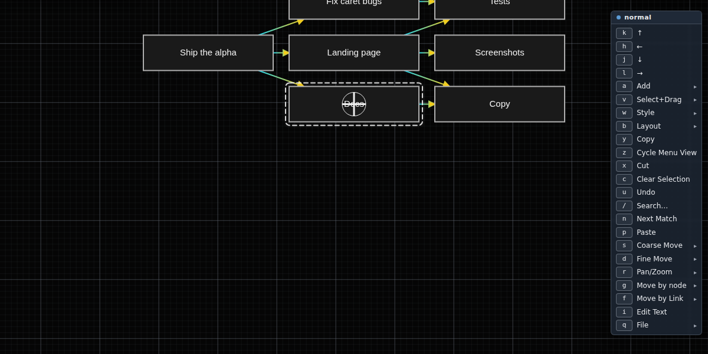
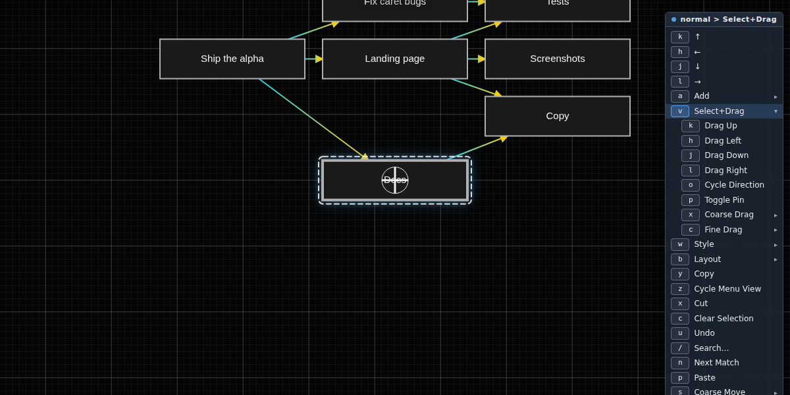
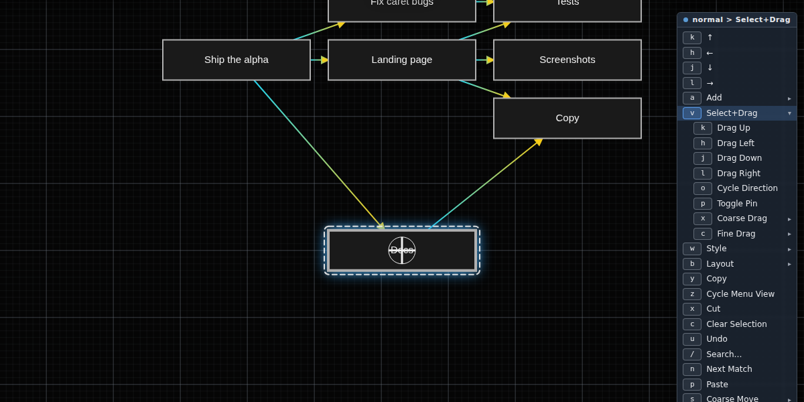
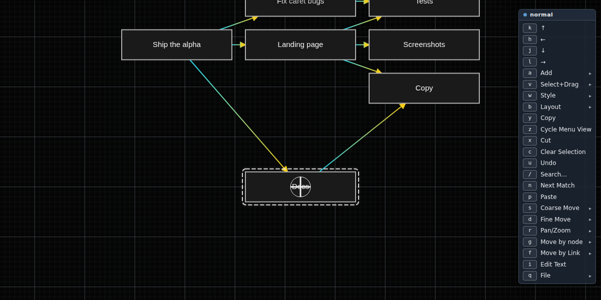
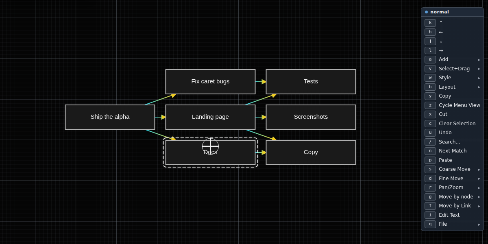
Question four
A roadmap is just a graph you have not finished arguing with yet.
Everything on this branch is a claim about the future, so read it that way. I would rather publish the list and be held to it than pretend the alpha is finished.
ijkl, wasd, arrow keys, Emacs. The dashed arrow leaving the top of the frame goes all the way back to “Support other options in the future” in the first branch — the promise and the plan are the same node seen twice.
vi bindings are the ones I could design fastest, not the ones everybody should have to use.
Two people on one graph is the obvious version. The one I care more about is an agent editing the same graph I am editing — agents already do much of the work on this project, and the handover happens through files instead of through the picture.
Layout and routing keep improving underneath all of it, probably with alternative algorithms you can choose between rather than one that claims to always be right.
Pull in the neighbours of the node you are on. Collapse a subgraph to a single box and expand it again. The graph does not change; only what you are being shown does — which is the only way a big graph stays workable on one screen.
A saved series of views is a presentation. A diff between two versions of a graph is a review. Git integration makes both of those history. And once a graph can carry a type — a todo graph, an architecture, a family tree — the tool can start being opinionated in useful ways.
Plus visual polish, which is last on purpose.
That is the entire page as one graph. You cannot read it at this size — and that is exactly the state KiDraw is usually in when I am looking for the branch I want, which is why moving between nodes matters more than moving pixels.
It also happens to be how I keep the project's own task list, which is a slightly recursive way to find bugs.
Before you open it
Chrome, a physical keyboard, and some patience. Saving is local-only and Chrome-only, some edges still route worse than you would draw them by hand, and the navigation model is going to change. Anything on this page that is not in a screenshot is a claim, not a shipped feature.
I am also building it to find out something else: whether AI-assisted development makes unusual interfaces cheap enough to actually try. I keep KiDraw's own task list in KiDraw, which is a blunt way of finding out what the tool is still bad at.
The diagram above is drawn from this list — it is the same file I keep in org-mode. Numbers mark ordered steps; ↗ marks a link to a box in another branch.
h for leftj for downk for upl for righthjklaESC or Ctrl-[ah for left, j for down, k for up, l for righti, j, k, and lw, a, s, and d